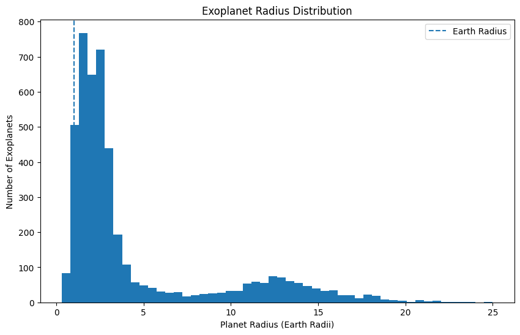
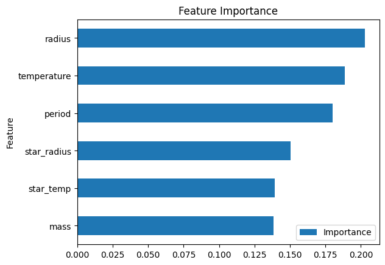
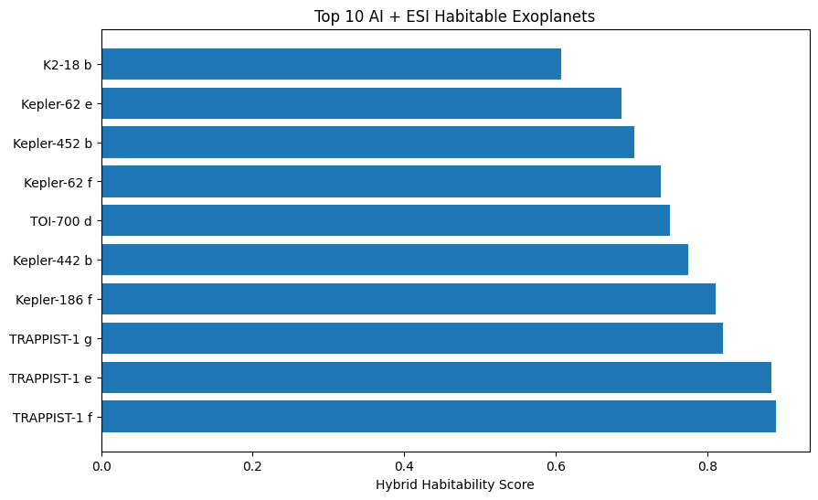

Total Exoplanets Analysed: 6,298
Known Habitable Candidates: 12
Machine Learning Model: Random Forest (300 Trees)
Data Source: NASA Exoplanet Archive
Top Candidate: TRAPPIST-1 e
Highest Score: 87.3%
🥇 Radius — 20.29%
🥈 Temperature — 18.87%
🥉 Orbital Period — 18.02%
⭐ Star Radius — 15.05%
🌞 Star Temperature — 13.93%
🪐 Mass — 13.85%



1. TRAPPIST-1 e — 87.3%
2. TRAPPIST-1 f — 85.7%
3. Kepler-62 f — 84.7%
4. Kepler-186 f — 81.3%
5. TRAPPIST-1 g — 78.7%
6. Kepler-442 b — 76.7%
7. Kepler-62 e — 74.7%
8. Kepler-452 b — 68.7%
9. TOI-700 d — 62.3%
10. K2-18 b — 61.3%
✔ NASA Exoplanet Archive Data
✔ 6,298 Confirmed Exoplanets
✔ Machine Learning Ranking System
✔ Real Habitable Candidate References
✔ Habitability Probability Scores
This project analyzed 6,298 confirmed exoplanets from the NASA Exoplanet Archive using a machine learning habitability ranking system.
Twelve well-known potentially habitable exoplanets were used as reference examples for training a Random Forest model.
The model evaluated planetary radius, mass, orbital period, equilibrium temperature, and host star properties to identify worlds that resemble known habitable candidates.
TRAPPIST-1 e achieved the highest habitability score (87.3%), followed by TRAPPIST-1 f, Kepler-62 f, Kepler-186 f, and Kepler-442 b.
Feature importance analysis revealed that planetary radius (20.29%) and equilibrium temperature (18.87%) were the strongest indicators of habitability within the dataset.
The results demonstrate how machine learning can assist astronomers in prioritizing exoplanets for future atmospheric characterization and biosignature searches.